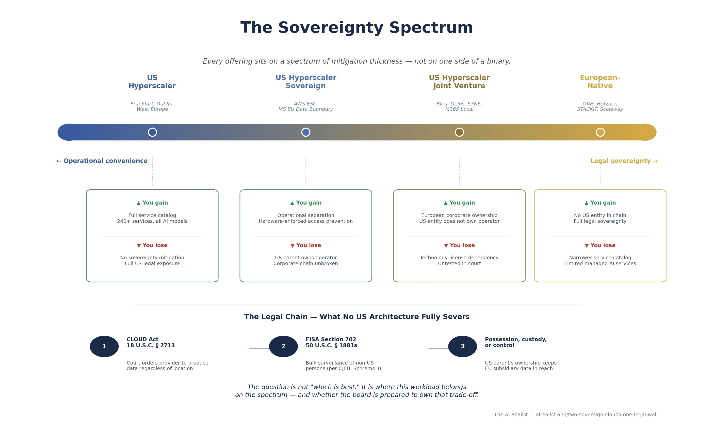

On June 10, 2025, a Tuesday morning in the French Senate, Anton Carniaux sat under oath. Carniaux, Microsoft France’sdirecteur des affaires publiques et juridiques, had been summoned before thecommission d’enquête sur la commande publique— the Senate inquiry into the costs, methods, and economic multipliers of public procurement. The senators had a simple question. Rapporteur Dany Wattebled posed it directly: could Carniaux guarantee, under oath, that data entrusted to Microsoft by French citizens would never be transmitted to US authorities without the explicit authorization of France?
“Non,” Carniaux replied. “Je ne peux pas le garantir.”[1] He could not guarantee it. Not because Microsoft is careless with European data — the company has invested billions in residency controls, governance layers, and institutional scaffolding designed to keep European data European. He could not guarantee it because Microsoft is an American company, and American law does not stop at American borders.
Seven months later, on January 15, 2026, Amazon Web Services launched its European Sovereign Cloud from a data center complex in Brandenburg, Germany — a €7.8 billion bet that a physically and logically separate cloud partition, operated exclusively by EU residents under a German parent company, could deliver something sovereign enough for Europe’s most regulated customers.[2] Microsoft, for its part, had been building its own sovereign answer since mid-2025: a layered governance architecture spanning an EU Data Boundary, a European board of directors, a Data Guardian approval system, and a network of national partner clouds operated by European joint ventures — culminating, in February 2026, with M365 Local and Foundry Local, which bring productivity software and AI inference onto customer-owned hardware, disconnected from the public cloud entirely.[3]
The Seventy-Percent Problem
The timing was not coincidental. Both companies were responding to the same structural pressure. Amazon, Microsoft, and Google control approximately 70 percent of the European cloud infrastructure market, a share that has held steady even as the market grew sixfold to €61 billion between 2017 and 2024.[4] European providers — SAP, Deutsche Telekom, OVHcloud, and a long tail of national players — collectively hold roughly 15 percent, a figure that has barely moved since 2022 despite their revenues tripling in the same period.[5] The market is not competitive in the traditional sense. It is a settled oligopoly with a sovereignty problem.
That problem sharpened dramatically after January 2025. A new US administration brought renewed scrutiny to the legal instruments that allow American authorities to reach data held by American companies anywhere in the world. In December 2025, a legal opinion commissioned by the German Federal Interior Ministry and authored by the University of Cologne’s law faculty — released through a freedom of information request — concluded what many had suspected but few had seen stated so bluntly in an official government document: the physical location of data in Europe is legally irrelevant when the cloud provider is subject to US jurisdiction. What matters is control, and control follows the corporate chain to the American parent.[6]
AWS and Microsoft have built different sovereign cloud architectures for Europe — a clean partition versus a layered governance model — and both represent serious engineering. But both architectures terminate at the same legal endpoint: a US parent company subject to the Clarifying Lawful Overseas Use of Data Act and the Foreign Intelligence Surveillance Act. Every sovereign offering from a US-headquartered provider sits somewhere on a spectrum of mitigation thickness, not on one side of a binary between sovereign and not. The CTO’s real job is not to choose “sovereign” or “not sovereign.” It is to match workload sensitivity to the right point on that spectrum — and to understand exactly which links in the legal exposure chain each architecture addresses, and which it does not.
The Chain That Cannot Be Cut
To understand why Carniaux could not give the senators what they wanted, you need to trace a specific statutory chain. Not “US law is complicated” — a specific sequence of legal provisions that creates a path from a US court order to data sitting on a server in Brandenburg or Dublin.
The chain begins with 18 U.S.C. § 2713, the compelled disclosure provision added to the Stored Communications Act by the CLOUD Act of 2018. The full text of the operative sentence is worth reading precisely, because precision is what distinguishes the legal reality from the marketing: “A provider of electronic communication service or remote computing service shall comply with the obligations of this chapter to preserve, backup, or disclose the contents of a wire or electronic communication and any record or other information pertaining to a customer or subscriber within such provider’s possession, custody, or control, regardless of whether such communication, record, or other information is located within or outside of the United States.”[7]
Three words do the heavy lifting: “possession, custody, or control.” A US court issues an order. The order goes to the provider — not to the data center, not to the subsidiary, not to the encryption key holder. It goes to the entity that is a US person, subject to US jurisdiction. If the data is within that entity’s possession, custody, or control — through ownership of the subsidiary, contractual rights, technical access, or management authority — the provider must comply. The data’s physical location, stated explicitly in the statute, is irrelevant.
The second link is the Foreign Intelligence Surveillance Act, specifically Section 702 (50 U.S.C. § 1881a). Where the CLOUD Act operates through individualized court orders, FISA 702 authorizes mass surveillance of non-US persons reasonably believed to be outside the United States for the purpose of acquiring foreign intelligence information. The Foreign Intelligence Surveillance Court approves annual certifications — not individual targets. There is no individualized judicial review of specific surveillance decisions, no notification to the target, and no right of appeal for the person whose data is collected.[8] Congress reauthorized Section 702 in April 2024, extending it to April 2026 while broadening the definition of which entities can be compelled to assist — expanding the surveillance net.[9]
The third link is jurisdictional reach. The CLOUD Act does not apply to all data everywhere. It applies to providers of electronic communication services or remote computing services that are subject to US jurisdiction. If no US-person entity is in the chain — no American parent, no American subsidiary, no American personnel with technical access — the statute does not reach the data. This is the link that sovereign cloud architectures attempt to sever, and the link where the University of Cologne opinion is most damaging. The opinion concluded that when a US company establishes a German subsidiary to operate cloud infrastructure on German soil, the parent company’s control over that subsidiary — through ownership, management authority, and contractual dependencies — is sufficient to keep the data within the “possession, custody, or control” chain.[10] No court has tested this specific question under the CLOUD Act. TheUnited States v. Microsoftcase that prompted the legislation became irrelevant when Congress passed the CLOUD Act, and the earlier court ruling was thrown out.[11] The legal consensus among European regulators — the Cologne opinion, the Carniaux testimony, the CNIL’s longstanding position — points in one direction: corporate restructuring slows the chain; it does not break it.
There is a safety valve. The CLOUD Act allows a provider to fight an order in court if complying would violate the laws of another country — say, GDPR. In practice, it is a narrow escape hatch, not a shield. The provider must hire lawyers and litigate, and the court weighs US law enforcement interests against the foreign legal conflict. The outcome is uncertain, the process is slow, and for FISA 702 — where orders are classified, and the provider may be prohibited from disclosing their existence — this mechanism is functionally irrelevant.[12]
A reasonable objection at this point: has any of this ever actually happened? AWS reports that since it began tracking in July 2020, no law enforcement request has resulted in the disclosure of enterprise or government content data to the US government from outside the United States.[13] That statistic is real and worth acknowledging. It is also insufficient for compliance purposes. Under the CJEU’s Schrems II framework, a GDPR risk assessment must consider the legal framework that applies to the data — the existence of the legal authority to compel access — not merely the frequency with which that authority has been exercised. And for FISA 702, the exercise would be invisible: directives are classified, providers are gagged, and no transparency report captures what cannot be disclosed.
One more legal instrument matters for what follows. The EU-US Data Privacy Framework is the agreement that allows European companies to send personal data to the United States. The European Commission adopted it on July 10, 2023 — the third such agreement, after courts struck down Safe Harbor in 2015 and Privacy Shield in 2020.[14]
A French legislator, Philippe Latombe, argued the agreement was no better than the ones the courts had already killed — that it still left European citizens’ data exposed to US surveillance without meaningful recourse. He sued to have it struck down. On September 3, 2025, the EU General Court ruled against him, finding the agreement valid.[15] But the court only looked at whether the agreement was sound when it was signed in 2023 — not whether conditions had changed since. They have. The Privacy and Civil Liberties Oversight Board, which the court cited as one of the safeguards protecting European data, lost its quorum in January 2025 when the incoming administration terminated the service of all three Democratic members.[17] Latombe appealed on October 31, 2025.[16]
The structural vulnerability that led to the failure of both predecessor agreements remains unresolved. US surveillance law still does not provide the protections that EU law requires. The current agreement papers this over with an executive order that a future administration could revoke without consulting Congress. The agreement is legal today. Whether it lasts is a different question.
This is the legal architecture both AWS and Microsoft are building against. Carniaux’s admission was not unique to Microsoft. Any executive of any US-parented cloud provider, testifying under oath, would have given the same answer — because the answer is dictated by statute, not by corporate policy. The chain is not a vague concern about “US government access.” It is a specific, traceable sequence of statutory authority that begins with an American parent company and ends at data nominally protected by European corporate structures.
AWS: The Clean Partition
Amazon’s approach is architectural separation. The AWS European Sovereign Cloud is not a configuration of an existing region. It is a new partition — designatedaws-eusc— with no logical connections to commercial AWS infrastructure. It has its own IAM system, its own billing infrastructure, its own Route 53 DNS using European top-level domains (amazonaws-eusc.eu), its own root Certificate Authority, and its own Security Operations Center staffed entirely within the EU.[18]
The corporate structure mirrors the technical architecture. AWS European Sovereign Cloud GmbH, a German holding entity with three subsidiaries covering infrastructure, certificate management, and personnel, houses the entire operation.[19] The managing directors are EU nationals residing in the EU.[20] An advisory board composed exclusively of EU citizens provides additional oversight and, by law, must act in the best interests of the GmbH.[21]
The technical access model is built on the Nitro System, AWS’s custom silicon and firmware architecture that underpins all EC2 instances. AWS’s central sovereignty claim is that Nitro, by design, eliminates mechanisms for AWS employees to access customer data on EC2 hosts. In 2023, NCC Group, a UK-based cybersecurity firm, completed an independent architecture review confirming this: “As a matter of design, NCC Group found no gaps in the Nitro System that would compromise these security claims.”[22] AWS subsequently added the access-prevention commitment to its service terms — a contractual obligation, not just a design claim.
The NCC Group review, however, has boundaries that matter for sovereignty assessment. The report explicitly describes itself as “a point-in-time evaluation” that “provide[s] no assurance with regards to any future chosen or compelled technical changes or deviations in policy.”[23] The scope excluded the control plane, the hypervisor, Nitro firmware and hardware, and the physical security environment.[24] What NCC Group validated is real — the API layer that governs operator access to running instances has no mechanism for data extraction. What it did not validate is the full stack from firmware to facility, and it cannot speak to what future changes might introduce. For a CTO evaluating sovereignty risk, the NCC Group report is the strongest independent evidence available for any hyperscaler’s claims of access prevention. It is not a certificate of sovereignty.
The service portfolio at launch includes more than 90 services — compute, storage, databases, containers, security, and a subset of AI and machine learning capabilities, including SageMaker and Bedrock.[25] AWS’s marketing describes the ESC as offering “the full power of AWS with the same familiar architecture, expansive service portfolio.” At launch, the expansive service portfolio is roughly a third of the 240-plus services available in Frankfurt. The gap is not timidity — it is physics. A partition is a fully independent software stack running on fully independent hardware, and every service must be deployed, tested, and validated separately, with no dependency on the global control plane. One AWS engineer who deployed services to the ESC bluntly described the constraint: partition isolation really slows down debugging. Problems that would be fixed in a day or two can take a month.”[26]
The AI gap is sharper than the 90-service count suggests. Bedrock is available, but only with Amazon Nova Lite and Nova Pro — no Claude, no Llama, no Mistral, no open-weight models of any kind. Advanced Bedrock capabilities, including retrieval-augmented generation and fine-tuning, are absent. More critically, no GPU instance families are available at all — no p, g, inf, or trn instances. This is not merely a training limitation. Without GPUs, organizations cannot self-host open-weight models for inference, cannot run custom model serving, and cannot build GPU-accelerated AI pipelines. An organization that wants sovereign AI inference on anything other than Amazon’s own models has no path to do so within the ESC today. Whether this reflects launch sequencing or a deliberate platform strategy, the effect is the same: the ESC’s AI capability is currently limited to Amazon’s own model family. The GovCloud precedent suggests sequencing — that partition followed the same pattern, launching with limited Bedrock models before gradually adding Claude, Llama, and GPU instances over subsequent quarters. Third-party model deployment in a sovereign partition requires separate licensing agreements with each provider, not just engineering work. The ESC will likely follow the same trajectory. How long does that take, in terms of any CTO planning sovereign AI workloads today?[26]
Beyond AI, the ESC is single-region with no cross-region failover, and notable service gaps — content delivery, centralized access management, CI/CD — are on published roadmaps with 12-18 month horizons.[26] The AI gap — particularly GPU availability and third-party model support — may take longer to close.
AWS has stated that authorized EU staff have access to “a replica of the source code needed to maintain” the European Sovereign Cloud — a subset, not the full codebase, but one that provides continuity assurance beyond any other hyperscaler sovereign offering.[27] In a severance scenario, the lights could stay on. Whether the code replica would allow the sovereign cloud to evolve and patch vulnerabilities independently is a different and harder question.
The pricing premium is approximately 15 percent over the Frankfurt commercial region, based on early benchmarking.[28] Not trivial for large deployments, but not the two-to-three-times premium that some national sovereign clouds charge.
What does this architecture address? Data residency: yes. Metadata residency: yes. Operational control by EU personnel: yes. Technical access prevention via hardware design: yes, with the NCC Group caveats. What does it not address? The ownership chain. AWS European Sovereign Cloud GmbH is a 100 percent subsidiary of Amazon.com, Inc.[29] Under German GmbH law, the managing directors owe fiduciary duties to the GmbH, not solely to the shareholders. The shareholder, however, retains the authority to appoint and remove those directors, and no German court has tested whether aGeschäftsführer’sfiduciary duty to a subsidiary would override a CLOUD Act order directed at the American parent. The advisory board advises — it does not govern. If a US court issues an order under § 2713 directed at Amazon.com, Inc. for data within the “possession, custody, or control” of its German subsidiary, the corporate separation adds procedural friction. It does not, under current legal interpretation, sever the chain.
One more link in the chain: encryption. AWS offers customer-managed keys through KMS and the External Key Store, where keys can reside entirely outside AWS infrastructure. If the customer holds the only decryption key, can a court order accomplish anything? The answer is that § 2713 compels theprovider’s cooperation, not the decryption itself. A provider can be ordered to produce data in its possession — including encrypted data — or to modify its systems to facilitate access. Encryption with customer-managed keys is the strongest available technical mitigation, and for some threat models it may settle the question entirely. It does not, however, exempt the provider from the obligation to comply with the order to the extent technically feasible.
Microsoft: The Layered Governance
Microsoft’s approach is not partitioning—it is governance. Rather than building a separate cloud, Microsoft has wrapped its existing European infrastructure in layers of control designed to restrict, monitor, and log access. The philosophy is different from AWS’s: instead of a wall, Microsoft built a system of locks, cameras, and approval requirements.
The foundation is the EU Data Boundary, which Microsoft completed on February 26, 2025. Since that date, Microsoft contractually commits that customer data for Microsoft 365, Dynamics 365, Power Platform, and most Azure services does not leave the EU for storage or processing.[30] Microsoft operates one of the world’s most complex distributed systems, and constraining data flows to a geographic boundary while maintaining functionality required years of engineering. The exceptions matter: security operations data, certain gaming services, some AI features, and — critically — compliance with lawful US orders. The last exception is not a loophole. It is the legal reality Carniaux testified to.
On top of the Data Boundary sits the Data Guardian, Microsoft’s access control mechanism for sovereign workloads. When a Microsoft engineer needs production access to sovereign customer environments, the request must be approved by a designated EU-resident Data Guardian who can review the scope, purpose, and duration of access in real time. The system generates tamper-evident audit logs.[31] This is operational sovereignty — no access without European oversight. The Data Guardian cannot, however, prevent what it cannot see. Under a FISA 702 directive, the government may prohibit the provider from disclosing the existence of the order. A gag order does not trigger the Data Guardian workflow. It bypasses it.
Microsoft’s encryption story centers on Azure Managed HSM and Double Key Encryption. DKE is the strongest protection Microsoft offers: the customer holds one key, Microsoft holds the other, and decryption requires both. Without the customer’s key, Microsoft cannot decrypt the data — and therefore, in principle, cannot produce readable content even if compelled.[32] The limitation is severe: DKE currently works only with Windows desktop applications, and enabling it disables search, data loss prevention, co-authoring, and eDiscovery across affected documents.[33] In practice, organizations deploy DKE selectively — applying it to their most sensitive documents while using standard encryption for everyday collaboration. For the documents that need sovereignty most, then, DKE is a protection that removes much of what makes the platform valuable.
The institutional architecture includes a European board of directors, announced in April 2025 and described as operational since November 2025. As of early 2026, Microsoft has not disclosed the board’s membership, its charter, its legal entity status, or its powers relative to Microsoft Corporation’s global governance.[34] The announcement is a commitment. Whether the board has authority to resist a US court order — or is an advisory body that adds institutional weight without legal teeth — cannot be assessed until Microsoft publishes the details.
Where Microsoft’s sovereign strategy becomes most interesting is at the edges: the national partner clouds. Bleu, a joint venture between Orange and Capgemini, is pursuing SecNumCloud certification in France, which, if achieved, would make it the first Microsoft-technology cloud to meet France’s highest security standard. Delos, a partnership between SAP and Arvato, targets the German market.[35] These JVs represent genuine corporate separation — European-owned entities, licensed to operate Microsoft technology. The US parent does not own the operator. If the JV structure holds, the “possession, custody, or control” chain may be harder to establish than for either AWS ESC or Microsoft’s own sovereign infrastructure, because the data is in the hands of a non-US entity — though whether the technology license terms that govern the JV’s operations could constitute “control” under § 2713 has not been tested. The trade-off is brutal: feature velocity depends on the technology license, the JV cannot modify the codebase independently, and the service portfolio will always lag global Azure. Bleu and Delos are buying sovereignty at the cost of capability — the inverse of what AWS ESC offers.
Microsoft’s M365 Local, generally available in February 2026, takes a different approach for the most sensitive workloads: put Exchange, SharePoint, and the legacy Skype for Business on customer-owned hardware, disconnected from the public cloud entirely, with Teams support planned.[36] This is sovereignty by air gap. It works. It also abandons every advantage of cloud computing — scale, elasticity, managed services, and automatic updates. M365 Local is an admission that, for some workloads, the sovereign answer to cloud is not cloud. Microsoft is extending that logic to AI: Foundry Local, announced alongside M365 Local’s general availability, brings large language models into fully disconnected environments on NVIDIA hardware — sovereign AI inference without a network connection to Redmond. The air-gapped sovereign stack is broader than productivity software. It now includes the capabilitythat European defense and intelligence agencies will demand most.
The AI contrast with AWS ESC is worth pausing on. Where AWS’s sovereign partition launched with only Amazon Nova models and no GPU instances, Microsoft’s EU Data Boundary regions offer managed AI models through Azure OpenAI, GPU instance families for self-hosted inference, open-weight models for on-premises deployment, and fully disconnected inference through Foundry Local. Delos, the German JV, is expanding to 4,000 GPUs for sovereign AI in Germany’s public sector. None of this operates within the clean partition model that AWS ESC offers — it sits behind the EU Data Boundary and the Data Guardian, which are governance layers, not architectural separation. The trade-off, again, is different: Microsoft offers broader sovereign AI capability at a lower isolation standard.[37]
The Spectrum, Not the Scoreboard
The temptation is to declare a winner. Resist it. AWS and Microsoft are solving different problems for different customer profiles, and each architecture has strengths that the other lacks.
AWS ESC offers a cleaner sovereignty story for infrastructure workloads. The partition model means that metadata, IAM tokens, DNS, and billing data remain within a boundary with no logical connection to commercial AWS. The Nitro System’s hardware-enforced access prevention is independently validated and contractually binding. For a workload that runs on EC2, stores data in S3, and uses customer-managed keys via KMS or the External Key Store, the operational attack surface for unauthorized access is narrower than that of any alternative from a US hyperscaler. The constraint is AI: without GPU instances or third-party model support, the ESC currently offers sovereign compute and storage but not sovereign AI beyond Amazon’s own models.
Microsoft’s strength is twofold: the productivity layer and the AI layer. Most European organizations that depend on a US hyperscaler are not running custom applications on EC2. They are running Microsoft 365 — Exchange, SharePoint, Teams, and Copilot. For those workloads, AWS has no sovereign answer because AWS does not offer the product. Microsoft’s sovereign AI story is also more complete: managed models via Azure OpenAI within the EU Data Boundary, GPU instances in European regions for self-hosted inference, open-weight models via gpt-oss, and disconnected inference via Foundry Local. The governance model is weaker than AWS’s partition — layers of control rather than architectural separation — but the capability set is broader.
Both architectures share the same fundamental vulnerability: US parent ownership. Amazon.com, Inc. owns AWS European Sovereign Cloud GmbH. Microsoft Corporation operates the EU Data Boundary and the Data Guardian. Neither corporate restructuring severs the § 2713 chain. The Cologne opinion, the Carniaux testimony, and the broader direction of European regulatory analysis all point to the same conclusion: for workloads where the legal exposure itself is the risk — where a CISO must certify to a regulator that non-EU government access is structurally impossible — no offering from a US-parented provider currently satisfies that standard.
The spectrum, then, looks like this. At one end: standard commercial regions (Frankfurt, Dublin) with contractual data residency but no operational separation — the baseline that most European enterprises use today. In the middle: AWS ESC and Microsoft’s sovereign architecture, offering operational separation and access controls that address data residency, metadata residency, operational control, and (in AWS’s case) hardware-enforced access prevention. Farther along: the JV model (Bleu, Delos, S3NS), where a European-owned entity operates licensed US technology — more corporate separation, less capability, untested in court. At the far end: European-native providers (OVHcloud, Hetzner, STACKIT, Scaleway) with no US corporate chain at all — full legal sovereignty at the cost of ecosystem breadth, managed AI services, breadth of independently validated security certifications, and the network effects of hyperscaler marketplaces.[38]
The full decision matrix — ten dimensions, four architectures, workload routing, and five questions for the board — is embedded below.
Every workload sits differently on that spectrum. (I have this conversation regularly with European portfolio companies — the landing point is almost always set by the customer’s regulator, not the company’s own risk appetite.[43]) A public-facing web application with no personally identifiable data does not require the same level of sovereignty posture as a defense ministry’s classified communications system. A pharmaceutical company’s clinical trial data has different exposure tolerances than a media company’s content delivery network. The sovereign cloud offerings from AWS and Microsoft have made the middle of the spectrum viable for the first time. Mistaking the middle for the end of it is the risk.
What Would Have to Break
The legal gap between sovereign cloud architecture and legal sovereignty could be closed. It would require legislative change, not better engineering.
A CLOUD Act executive agreement between the United States and the European Union would create a bilateral framework for data requests, making unilateral US orders against EU-stored data unnecessary or subject to mutual legal assistance procedures. The US has concluded such agreements with the United Kingdom and Australia.[39] No US-EU agreement is under negotiation as of early 2026, and the political conditions for one — requiring the EU to accept that its citizens’ data could be accessed under a streamlined process — are difficult to meet.
The European Union Cybersecurity Certification Scheme, EUCS, was designed to include a “sovereignty tier” requiring EU headquarters, data localization, and immunity from non-EU law. The March 2024 draft removed those requirements under pressure from the US government and industry. France is pushing to reinstate them. The scheme’s adoption is now tied to CSA2, the Cybersecurity Act recast proposed in January 2026, which could reintroduce “non-technical risk factors” — a regulatory euphemism for “is your parent company American?”[40] If EUCS adopts a sovereignty tier, it would create a certification standard that no US-parented provider can meet — effectively segmenting the European market between sovereign-certified and everything else.
The Cloud and AI Development Act, CADA, expected in 2026, would go further: binding regulation with procurement rules that could mandate European-owned providers for sensitive public sector workloads.[41] The EuroStack Initiative, backed by more than 300 signatories including Airbus, is lobbying for exactly this outcome.
For FISA Section 702, the clock is already ticking. The authority sunsets on April 20, 2026, unless reauthorized by Congress. If 702 lapses — which is unlikely but not impossible given the intense debate over the last reauthorization — one of the two primary legal instruments that create European exposure to sovereignty would cease to operate.[42] If it is reauthorized with the expanded provider definition intact, the exposure widens. Either outcome changes the risk calculation for European CTOs.
None of these changes are within the control of a CTO choosing a cloud provider this quarter. They are the structural context in which the choice is made. The honest assessment is this: AWS’s clean partition and Microsoft’s layered governance are the best available mitigations from US-headquartered providers, addressing operational sovereignty — who has access day-to-day — with rigor and transparency that did not exist two years ago. They do not address legal sovereignty — who can be compelled to provide access — because that question is answered by statutes, not architecture.
Understanding the legal gap, though, is only half the decision. The other half is what full sovereignty costs — and what the sovereign alternatives actually deliver today. Within the US hyperscaler sovereign offerings, the AI picture is uneven — Microsoft offers managed models, GPU instances, open-source self-hosting, and disconnected inference; AWS ESC offers only Amazon EC2 via Bedrock, with no GPU instances for self-hosted inference. A CTO choosing between the two for sovereign AI workloads is not choosing between equivalent capabilities.
Against European-native providers, the comparison is different again. No European provider matches a standard hyperscaler region on managed AI services. The sovereign versions of those hyperscaler regions, however, narrow the gap more than the marketing suggests — particularly AWS ESC, which launched with roughly a third of standard AWS’s service catalog. AWS has a track record of reaching near-parity across partitions — GovCloud now carries most of the services available in commercial regions (see note 26) — but the timeline is measured in years, not quarters. The managed services argument is real for Microsoft’s sovereign offerings; for AWS ESC, it is a bet on that track record.
SecNumCloud, France’s highest cloud security standard, certifies legal immunity from extraterritorial law; as ANSSI director Vincent Strubel clarified after the S3NS qualification, the certification “does not exempt from the application of the law” but structures the service so that foreign data transfer demands become operationally inoperable.[45] It does not benchmark the provider’s operational security posture against a hyperscaler’s hardware-enforced access prevention, confidential computing, or security operations at scale.[46] The hyperscalers have spent billions on those capabilities. A company that moves entirely to a sovereign European cloud buys legal immunity from § 2713 and FISA 702. It pays for that immunity in engineering velocity, operational overhead, and a security posture built on smaller budgets with thinner margins. You can build on cloud-native stacks without managed services. You will pay a velocity and operational cost for that choice, and your board should know it.
The sovereignty debate frames the choice as sovereign or exposed. The practitioner’s choice is harder: how much velocity and security are you willing to trade for legal sovereignty, and is your board prepared to explicitly own that trade-off? I’ve written separately about how to match specific workload categories to specific points on the sovereignty spectrum — a decision framework for the CTO who needs to act on this analysis, not just understand it.[44]
Different architectures, different strengths, same legal wall. The engineering is real. The sovereignty is not. And the alternative has costs that the brochure doesn’t mention either.
Notes
[1] Testimony of Anton Carniaux,directeur des affaires publiques et juridiques, Microsoft France, before thecommission d’enquête sur les coûts et les modalités effectifs de la commande publique et la mesure de leur effet d’entraînement sur l’économie française, French Senate, June 10, 2025. Video available atvideos.senat.fr. Transcript published in Senatecompte renduand report N° 830,session extraordinaire2024-2025. Full quote: “Non, je ne peux pas le garantir, mais, encore une fois, cela ne s’est encore jamais produit” (“No, I cannot guarantee it, but, once again, this has never happened”). The guarantee question was posed by rapporteur Dany Wattebled;présidentSimon Uzenat followed up on the credibility of the transparency report and the PRISM program. Some media accounts (e.g.,L’Usine Digitale) attribute the guarantee question to Uzenat; the official transcript, however, confirms that it was Wattebled. Carniaux était accompagné de Pierre Lagarde, directeur technique du secteur public. Note: Carniaux subsequently departed Microsoft France (perOption Droit & Affaires, October 22, 2025).
[2] AWS,“Opening the AWS European Sovereign Cloud,” January 14, 2026. The €7.8 billion figure is a forward investment commitment through 2040, not disbursed expenditure. First region: eusc-de-east-1, Brandenburg, Germany, three Availability Zones.
[3] Microsoft announced its sovereign cloud strategy in phases:EU Data Boundarycompletion (February 26, 2025); European board of directors (announced in April 2025, operationalized in November 2025); Data Guardian; and national partner clouds (Bleu and Delos operational timelines vary).
[4] Synergy Research Group,“European Cloud Providers’ Local Market Share Now Holds Steady at 15%,” July 2025. Amazon, Microsoft, and Google account for 70% of European cloud infrastructure service revenues (IaaS, PaaS, and hosted private cloud). European market estimated at €36 billion in H1 2025, full-year 2025 projected at €75+ billion. Confirmed by CNBC,“These four charts show how reliant Europe is on U.S. digital infrastructure,” February 13, 2026, citing Synergy data.
[5]Synergy Research Group, July 2025. European providers’ share fell from 29% in 2017 to 15% in 2022 and has remained steady since. European provider revenues tripled from 2017 to 2024; the market grew sixfold.
[6] Legal opinion on the US legal framework regarding access to cloud data, commissioned by the German Federal Ministry of the Interior (BMI), authored by the Faculty of Law, University of Cologne, dated March 2025. Released December 2025 via FragDenStaat freedom of information request (available in redacted form atfragdenstaat.de/dokumente/273689). The opinion analyzes the CLOUD Act (SCA as amended), FISA Section 702, and related authorities. Key finding: physical storage location is legally irrelevant; determinative factor is the provider’s control relationship. The BMI subsequently adjusted its rules for handling classified information in response. Reported byHeise Online, December 10, 2025;Tagesspiegel Background, December 11, 2025.
[7]18 U.S.C. § 2713, “Required preservation and disclosure of communications and records.” Added by the Clarifying Lawful Overseas Use of Data Act, Pub. L. 115-141, div. V, § 103(a)(1), signed March 23, 2018, 132 Stat. 1214. The CLOUD Act was enacted as Division V of the Consolidated Appropriations Act, 2018. It amended the Stored Communications Act (18 U.S.C. §§ 2701-2712) and created a framework for executive agreements with foreign governments. The legislative impetus wasUnited States v. Microsoft Corp., No. 17-2, in which the Supreme Court had heard oral argument on February 27, 2018, regarding whether the SCA authorized warrants for data stored outside the US. The case was dismissed as moot after enactment.
[8]50 U.S.C. § 1881a(FISA Section 702). The broader FISA framework spans 50 U.S.C. §§ 1801-1885a. Section 702 authorizes the Attorney General and Director of National Intelligence to jointly authorize, with FISC approval, the targeting of non-US persons reasonably believed to be outside the United States for the acquisition of foreign intelligence information. Certifications are annual; individual targeting decisions are made by intelligence agencies without individualized judicial approval. See Congressional Research Service,“FISA Section 702 and the 2024 Reforming Intelligence and Securing America Act,” R48592, for a comprehensive analysis. Note: US officials characterize Section 702 as targeted collection; the CJEU in Schrems II (Case C-311/18, ¶¶ 178-185) found that Section 702 programs “are not circumscribed in a way that satisfies requirements that are essentially equivalent” to EU law — language European regulators interpret as describing mass surveillance.
[9] Reforming Intelligence and Securing America Act (RISAA), Pub. L. No. 118-49, 138 Stat. 862, enacted April 20, 2024. Section 702 sunsets April 20, 2026, absent further reauthorization (RISAA § 19). Note: PCLOB cites the sunset as April 19, 2026; the CRS and statutory text support April 20. RISAA Section 25 broadened the definition of “electronic communication service provider” in 50 U.S.C. § 1881(b)(4), expanding the universe of entities subject to compelled assistance. See Brookings Institution,“A key intelligence law expires in April, and the path for reauthorization is unclear,” February 2026; Center for Democracy and Technology,“With the Passage of RISAA, FISA 702 Reform Has Been Delayed But Not Denied,” May 2024.
[10]University of Cologne opinion, March 2025(note 6). The opinion specifically addresses the scenario of a US company establishing a German subsidiary (”eine deutsche Tochter nach deutschem Recht“) to operate cloud infrastructure on German territory. The analysis concludes that the parent company’s ultimate control (Letztkontrolle) over the subsidiary is sufficient to place the data within “possession, custody, or control” under the CLOUD Act. Even purely European companies with significant US business relationships may fall within US jurisdiction. The opinion is available only in redacted form; some analytical passages are redacted.
[11]United States v. Microsoft Corp., 138 S. Ct. 1186 (2018). The Supreme Court dismissed the case as moot per curiam on April 17, 2018, following enactment of the CLOUD Act on March 23, 2018. The Second Circuit’s decision (In re Warrant to Search a Certain E-Mail Account Controlled & Maintained by Microsoft Corp., 829 F.3d 197 (2d Cir. 2016)), which had quashed the warrant, was vacated. No published court has subsequently tested whether a separately incorporated subsidiary structure severs the “possession, custody, or control” chain under § 2713.
[12]18 U.S.C. § 2703(h), as added by the CLOUD Act § 103(b). The comity provision allows a provider to file a motion to quash or modify a legal process if (a) the customer or subscriber is not a United States person and does not reside in the United States, and (b) the required disclosure would create a material risk that the provider would violate the laws of a qualifying foreign government. The court must then balance factors including the interests of justice, US investigative interests, the foreign state’s interests, the likelihood of a penalty under foreign law, and the nature and severity of the offense. For FISA 702, the classified nature of directives and gag order provisions makes the comity mechanism functionally inaccessible. Note: AWS has publicly stated it would challenge any order it believed conflicted with EU law, using the comity provision and other legal mechanisms. This is a procedural commitment — it changes the litigation posture but does not change the underlying legal exposure.
[13] AWS Information Request Report, available ataws.amazon.com/compliance/amazon-information-requests/. AWS reports that from July 2020 onward, “Amazon objected to or had no data responsive to each law enforcement request received from any government for enterprise or government content data stored outside the United States.” Note: this reporting covers law enforcement requests and would not capture FISA 702 directives, which are classified.
[14]European Commission Implementing Decision (EU) 2023/1795 of 10 July 2023pursuant to Regulation (EU) 2016/679 on the adequate level of protection of personal data under the EU-US Data Privacy Framework. The DPF rests onExecutive Order 14086, “Enhancing Safeguards for United States Signals Intelligence Activities” (October 7, 2022), and implementing regulations by the Attorney General establishing the Data Protection Review Court. Predecessor frameworks: Safe Harbor (invalidated by CJEU inSchrems I, Case C-362/14, October 6, 2015) and Privacy Shield (invalidated by CJEU inSchrems II, Case C-311/18, July 16, 2020).
[15]Case T-553/23,Philippe Latombe v European Commission, judgment of September 3, 2025, ECLI:EU:T:2025:831. The General Court dismissed the action for annulment on the merits without ruling on admissibility (”in the interests of the proper administration of justice”). The court found the DPRC independent and impartial, and found US bulk collection practices sufficiently circumscribed. Notably, the court assessed the DPF’s adequacy based on the legal and factual situation at the time of the Commission’s adoption (July 2023), not at the time of judgment — a methodological choice that excluded post-adoption developments.
[16] Latombe filed an appeal to the Court of Justice of the European Union on October 31, 2025 (Case C-703/25 P). See WilmerHale,“European Court of Justice to Review Challenge to EU-U.S. Data Privacy Framework,” December 1, 2025. NOYB (Max Schrems’s organization) has separately indicated it is reviewing options for a broader challenge. EO 14086 and the implementing AG regulations that underpin the DPF are executive and administrative actions, respectively, that can be modified without congressional approval. Unwinding the DPF would require multiple administrative steps, not a single executive order.
[17] ThePrivacy and Civil Liberties Oversight Boardhad its three Democratic members terminated by the incoming administration in January 2025, leaving the board without a quorum. The General Court’s Latombe judgment (note 15) referenced PCLOB’s oversight role as one safeguard contributing to the DPF’s adequacy finding. The loss of quorum is a post-adoption development that the General Court noted the Commission is “required to monitor continuously.”
[18] AWS,“Overview of the AWS European Sovereign Cloud,” whitepaper, September 29, 2025 (updated January 2026). The partition designation isaws-eusc, distinct from the commercialawspartition and the GovCloudaws-us-govpartition. See also AWS,“Exploring the new AWS European Sovereign Cloud: Sovereign Reference Framework,” December 11, 2025, which maps sovereignty criteria to specific controls across governance independence, operational control, data residency, and technical isolation. AWS states the ESC-SRF will be independently audited by a third party in 2026, with results published in a sovereignty-specific SOC 2 report — the first such report from any hyperscaler if completed as described.
[19] AWS European Sovereign Cloud GmbH, Handelsregister Potsdam HRB 40853 P. Entity structure confirmed in AWS whitepaper (note 18) and Northdata registry entry. See also European Cloud,“On the AWS European Sovereign Cloud,” January 2026.
[20] Kathrin Renz was announced as the first managing director in the AWS whitepaper (note 18). Stéphane Israël’s appointment was announced separately; Israël was previously CEO of Arianespace and a launch provider for Amazon’s Project Kuiper satellite constellation. Stefan Hoechbauer was appointed as the third managing director in January 2026, as noted in the AWS launch blog post (note 2). All three are EU nationals residing in the EU.
[21] Advisory board: composed exclusively of EU citizens, including two independent third-party representatives. Established through the Articles of Association (Gesellschaftsvertrag) of the GmbH. “By law, this advisory board will be required to act in the best interest of the AWS European Sovereign Cloud” — AWS whitepaper (note 18). Advisory boards (Beiräte) under German GmbH law have advisory authority; they do not have the governance powers of a supervisory board (Aufsichtsrat) unless the Articles specifically grant them such powers. Updated composition per AWS launch blog post, January 15, 2026.
[22] NCC Group,“Public Report — AWS Nitro System API & Security Claims,” May 3, 2023. Engagement conducted in Q4 2022. AWS subsequently added the access-prevention commitment to its service terms: “AWS personnel do not have access to Your Content on AWS Nitro System EC2 instances.”
[23] NCC Group report (note 22), scope and limitations section: “This engagement represents a point-in-time evaluation of the Nitro System APIs. Security threats and attacker techniques evolve rapidly, and the results of this assessment are not intended to represent an endorsement of the adequacy of current security measures against future threats. Furthermore, statements made by NCC Group refer to the system as presented during the assessment window, and provide no assurance with respect to any future chosen or compelled technical changes or deviations in policy.”
[24] NCC Group report (note 22), scope exclusions listed explicitly: “Evaluation of EC2 Control Plane services generally. Evaluation of Nitro hypervisor, Nitro firmware, Nitro software on Nitro cards. Evaluation of Nitro Cards. Evaluation of the physical environment and physical security controls.”
[25] AWS,“Opening the AWS European Sovereign Cloud,”press release dated January 14, 2026; general availability January 15, 2026. More than 90 services at GA. Amazon Bedrock is available only with Amazon Nova Lite and Nova Pro — no third-party foundation models (Claude, Llama, Mistral) or advanced features (RAG, fine-tuning). SeetecRacer ESC analysis, January 2026: “Popular third-party foundation models such as Claude, Mistral, or Llama are currently not available.” No GPU instance families (p, g, inf, trn) are available, preventing self-hosted model inference. Standard AWS regions offer 240+ services with the full Bedrock model catalog, including Claude, Llama, Mistral, and Cohere. See also European Cloud (note 19) for independent verification of the service count.
[26] “The full power of AWS with the same familiar architecture, expansive service portfolio”: AWS whitepaper (note 18) andAWS launch blog post, January 15, 2026— language used repeatedly in official ESC materials. AWS engineer quote on partition isolation: reported byInfoQ, January 22, 2026, citing an AWS software development engineer on Hacker News who confirmed the technical isolation exists in practice but noted “isolation really slows down debugging issues. Problems that would be fixed in a day or two can take a month.” GovCloud precedent for model availability:AWS GovCloud Bedrock documentationshows Claude 3.7 Sonnet and Llama 3 eventually reached GovCloud after launching with limited models;AWS re:Post, August 2025documents user requests for newer models and the acknowledgment that “the authorization process for FedRAMP High and DoD Impact Level 4/5 is indeed lengthy”;AWS Public Sector Blog, October 2025, published a cross-partition workaround allowing GovCloud workloads to call Bedrock in standard regions — effectively acknowledging that partition model availability lags. Service gap details:tecRacer ESC pricing and service comparison, January 2026(no GPU instances — only t, c, m, r, and i families; Bedrock limited to Nova Lite and Nova Pro; CloudFront planned end 2026; Identity Center planned Q1 2026; Code* services absent);Nordcloud ESC pilot findings, February 2026(EKS without Fargate profiles, GuardDuty feature gaps, Inspector/Macie/Firewall Manager absent);CSA ESC analysis, January 2026(partition separation confirmed, service subset noted). The European Cloud comparison provides independent verification of service counts. The AWS Service Catalog atbuilder.aws.comis updated continuously. Local Zones in Belgium, the Netherlands, and Portugal announced at launch. Single-region architecture at GA; AWS has not disclosed timelines for additional sovereign regions.
[27] AWS whitepaper (note 18): authorized EU staff have access to “a replica of the source code needed to maintain” the European Sovereign Cloud, enabling continued operation if severed from global AWS. This is a subset of the AWS codebase, not the full source. The continuity assurance covers maintenance; independent evolution of the platform would face practical constraints.
[28]tecRacer benchmarkcomparing ESC and Frankfurt region pricing, January 2026. Approximately 15% premium. European Cloud (note 19) notes the premium may vary by service.
[29] Confirmed viaNorthdata registry entryand AWS whitepaper (note 18). Amazon.com, Inc. is the ultimate parent, not AWS, Inc. or Amazon Web Services EMEA SARL. The ownership chain runs from Amazon.com, Inc. (US, Seattle) to the GmbH (Germany, Potsdam).
[30] Microsoft, “EU Data Boundary” documentation. Completion announced February 26, 2025, per Julie Brill (Corporate VP, Chief Privacy Officer) and Paul Lorimer (Corporate VP, Microsoft 365),“Microsoft completes landmark EU Data Boundary, offering enhanced data residency and transparency,” Microsoft On the Issues blog, February 26, 2025. Covers Microsoft 365 (including Copilot for Microsoft 365), Dynamics 365, Power Platform, and most Azure services. Exceptions documented by Microsoft include security operations data required for threat detection, certain gaming services, and compliance with lawful orders from governments with jurisdiction over Microsoft.
[31] Microsoft,sovereign cloud documentation. Data Guardian is described as an EU-resident approval authority with real-time monitoring and tamper-evident audit logs for production access to sovereign customer environments. Details on operational procedures and the legal authority of the Data Guardian role are limited in public documentation.
[32] Microsoft,“Double Key Encryption” documentation. DKE uses two keys: one held by the customer (on-premises or in customer-managed HSM), one held by Microsoft. Decryption requires both keys. Without the customer’s key, Microsoft cannot produce readable content.
[33] DKE limitations: currently supported only on Windows desktop applications (Microsoft 365 Apps for enterprise). Enabling DKE disables search indexing, data loss prevention, co-authoring, and eDiscovery for affected content. These limitations significantly reduce the utility of Microsoft 365 collaboration features.
[34] Microsoft announced a European board of directors in April 2025 and said it would be operational in November 2025. As of February 2026, no public disclosure of board membership, charter, legal entity status, or governance powers. Without these details, the board’s ability to provide meaningful oversight or resistance to the US legal process cannot be assessed.
[35]Bleu: joint venture between Orange and Capgemini, targeting the French market, pursuing ANSSI SecNumCloud certification. Delos: partnership between SAP and Arvato (Bertelsmann subsidiary), targeting the German market. Both operate as European-owned entities licensed to run Microsoft technology.
[36] Microsoft 365 Local: generally available February 2026. Deploys Exchange, SharePoint, and Skype for Business (Teams planned) on customer-owned and -operated hardware, disconnected from Microsoft’s public cloud. Designed for classified environments and air-gapped operations. On February 24, 2026,Microsoft announced M365 Local disconnected operations as generally available alongside Foundry Local, which brings large AI models into fully disconnected sovereign environments on NVIDIA hardware — extending the sovereign private cloud stack to include AI inference capabilities.
[37] Microsoft sovereign AI capabilities in Europe: Azure OpenAI Service is available in EU regions (Sweden Central, France Central, West Europe), with “Data Zone Standard (EUR)” deployments that ensure EU-resident data processing — see Microsoft Learn forAzure OpenAI deployment types. GPT-4o, GPT-5 family, and o-series reasoning models are available. GPU instance families (NCv3, NDv4, NVv4) are available in Azure EU regions. Open-weight gpt-oss models (120B and 20B parameters) available for self-hosting via Azure AI Foundry and Foundry Local — seeMicrosoft Azure Blog, “OpenAI’s open-source model: gpt-oss on Azure AI Foundry,” August 2025. Delos Cloud (SAP sovereign JV) expanding to 4,000 GPUs for sovereign OpenAI capabilities — seeDatacenterDynamics, “OpenAI partners with SAP and Microsoft in Germany,” September 25, 2025. Note: Azure OpenAI within the EU Data Boundary operates under Microsoft’s governance model (Data Guardian, access logging), not within a separate partition like AWS ESC. The sovereignty posture is governance-based, not architecture-based.
[38] European-native providers: OVHcloud (Euronext Paris: OVH.PA— publicly traded since 2021, 43 data centers, SecNumCloud certified, Forrester Leader quadrant), STACKIT (Schwarz Digits/Lidl parent company, expanding rapidly, Google Workspace partnership under German sovereignty), Scaleway (Iliad group, hosts Mistral.ai, serverless AI focus), Hetzner (competitive pricing, growing market presence). These providers match hyperscalers in core IaaS but lag significantly in proprietary PaaS, managed AI services, marketplace depth, and the global developer ecosystem. Note: Google Cloud’s sovereign approach — partner-operated models through T-Systems (Germany) and Thales (France) — occupies a different position on the spectrum and merits separate analysis. This piece focuses on AWS and Microsoft as the two architectures representing opposite design philosophies (partition vs. governance).
[39] CLOUD Act executive agreements:United States-United Kingdom(effective October 3, 2022, pursuant to agreement signed October 3, 2019), United States-Australia (effective December 15, 2021). No US-EU executive agreement is under negotiation as of early 2026.
[40] EUCS: TheMarch 2024 draftremoved sovereignty tier requirements (EU HQ, data localization, immunity from non-EU law) under pressure from the US government and industry groups. France and several member states are pushing to reinstate them.CSA2 (Cybersecurity Act recast), proposed January 20, 2026 (COM(2026) 11), includes an ICT supply chain security framework with potential “non-technical risk factors.” The European Commission also published the Cloud Sovereignty Framework (CSF) in October 2025 as a procurement assessment tool for institutional cloud tenders.
[41] The Cloud and AI Development Act (CADA) is expected in 2026. TheEuroStack Initiative, an open letter with 300+ signatories including Airbus, calls for “Buy European” procurement rules for sensitive government cloud workloads.
[42] FISA Section 702 sunsets April 20, 2026 (note 9). If 702 lapses, existing certifications may allow collection to continue through their expiration (typically one year), but new certifications cannot be issued. The debate over reauthorization concerns the expanded ECSP definition, warrant requirements for US-person queries, and the scope of incidental collection. See Brookings (note 9).
[43] Full disclosure: the author works with European portfolio companies across sectors, evaluating cloud and AI infrastructure decisions, including sovereign cloud posture. The observation that customer procurement requirements — not the company’s own risk assessment — typically drive sovereignty positioning is drawn from these engagements. No specific company or investment is referenced.
[44] See “AI Sovereignty in Europe: A Decision Framework for Enterprise Leaders,” The AI Realist, available atairealist.ai/p/ai-sovereignty-in-europe-a-decision. That piece provides a workload-by-workload framework for matching sensitivity categories to sovereignty spectrum positions — the operational companion to the legal analysis in this piece.
[45] Vincent Strubel, director general of ANSSI, “Mise au point sur la qualification SecNumCloud,” January 2026 (reported byIT Social, January 12, 2026). Strubel clarified: “La qualification ne soustrait pas à l’application du droit” (”the certification does not exempt from the application of the law”) but structures the service so that “seul le prestataire qualifié a la capacité d’accéder aux données, ce qui empêche tout tiers — même juridiquement contraint à l’étranger — d’agir concrètement” (”only the certified provider can access the data, preventing any third party — even one legally compelled abroad — from acting concretely”). The 276 SecNumCloud 3.2 requirements span technical, operational, and legal dimensions — but the certification’s core purpose is legal immunity architecture (immunity from extraterritorial laws), not operational security benchmarking against hyperscaler capabilities. See also Cyprien Falque, CEO of S3NS, in Paperjam: “SecNumCloud, c’est un peu le socle indispensable” — the indispensable legal foundation, which must be complemented for specific vertical regulations.
[46] The certification breadth gap is substantial. AWS lists 143 compliance standards and certifications (AWS Compliance Programs, accessed February 2026), including FedRAMP High, DoD IL2-5, CJIS, ITAR, and dozens of country-specific programs. Azure claims “more than 100 compliance offerings” (Azure compliance documentation). By contrast, OVHcloud — the strongest European comparator — holds approximately 13 certifications and attestations: ISO 27001/27017/27018/27701, SOC 1/2/3 Type 2, SecNumCloud, HDS, PCI DSS, BSI C5, and CSA STAR (OVHcloud compliance page;OVHcloud ISO extension announcement;EUCloudCost certification matrix, January 2026). 3DS Outscale holds ISO 27001/27017/27018, SecNumCloud 3.2, HDS, TISAX, CISPE, and obtained SOC 2 Type 2 only in December 2025 (3DS Outscale press release, December 17, 2025). Scaleway holds ISO 27001 and HDS; it began the SecNumCloud qualification process in January 2025 and does not yet hold SOC 2 (Scaleway security and resilience page;Iliad press release, January 9, 2025). Many hyperscaler certifications are jurisdiction-specific (FedRAMP, IRAP, MTCS, K-ISMS) and not directly relevant to a European buyer’s operational security. The gap nonetheless reflects an organizational capacity to pass independent third-party audits at a scale European-native providers have not demonstrated — spanning security, availability, processing integrity, confidentiality, and privacy across multiple regulatory regimes simultaneously. This does not mean European providers are insecure; it means the scope and depth of independently validated security controls is asymmetric, and a CTO evaluating the trade-off should understand what they are gaining (legal immunity) and what they are accepting (narrower independent validation of operational security).